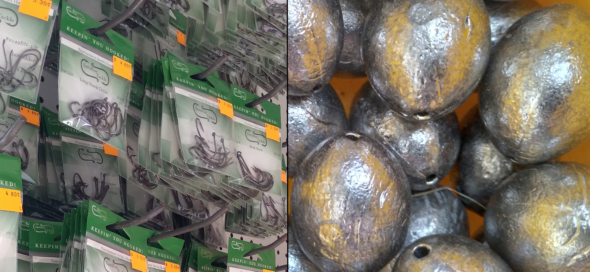

We have a varied selection of bait (frozen and live, and offshore), hooks, weights, soft plastics, jigheads, and rod and reel rentals.
Bait
We have a variety of bait, including: Live and frozen shrimp, blue crab, fiddler crab, mud-minnows. With a 24hr supply, we can cater to any fishing needs.
[insert image of bait]

Hooks & Weights
We carry Sandbar Tackle hooks, the types of which include nearly all shapes and sizes. We also carry locally made weights, which come in pyramid, bank, egg (all 1oz - 10oz), and spider (1oz - 16oz) styled weights.